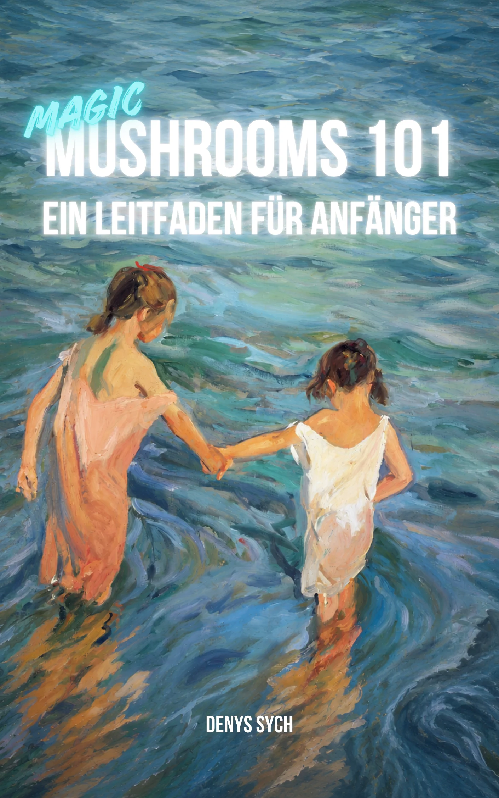

Magic Mushrooms Guide
Dieses Buch führt dich durch alle Phasen einer psychedelischen Reise: von Vorbereitung und Intention bis zum Umgang mit unerwarteten Wendungen und einer achtsamen Integration.
Es ist für Menschen geschrieben, die dieser Erfahrung mit voller Verantwortung begegnen möchten: Risiken reduzieren, typische Fallstricke vermeiden und wertvolle Erkenntnisse aus der Reise mitnehmen.
